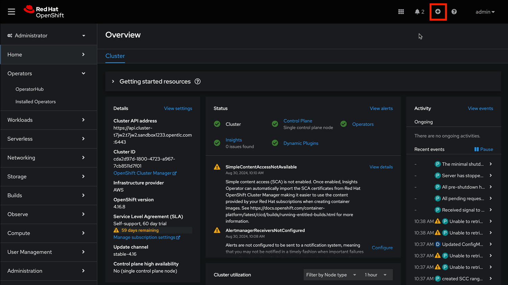
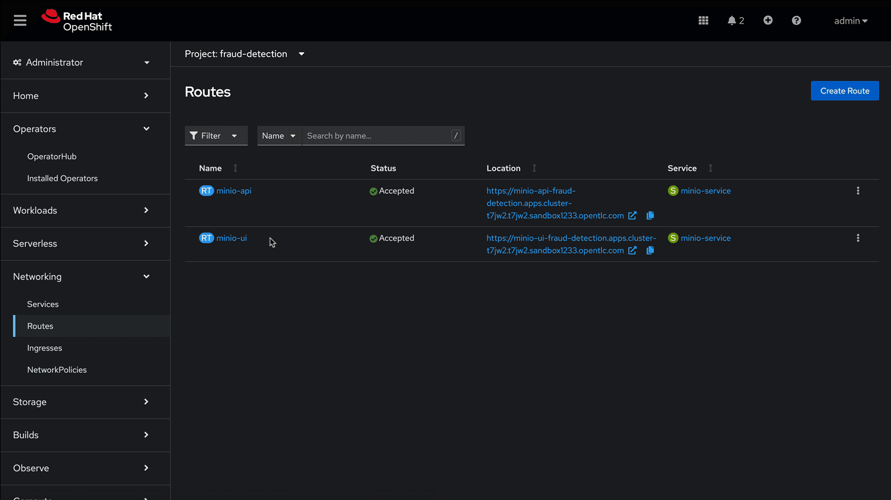

MinIO S3 Compatible Storage Setup
Deploy MinIO as S3 compatible storage [Update this…]
MinIO overview
MinIO is a high-performance, S3-compatible object store. It can be deployed on a wide variety of platforms, and it comes in multiple flavors.
This segment describes a very quick way of deploying the community version of MinIO in order to quickly setup a fully standalone Object Store, in an OpenShift Cluster. This can then be used for various prototyping tasks that require Object Storage.
| This version of MinIO should not be used in production-grade environments. Additionally, MinIO is not included in RHOAI, and Red Hat does not provide support for MinIO. |
MinIO Deployment
To Deploy MinIO, we will utilize the OpenShift Dashboard.

-
Then Select the + (plus) icon from the top right of the dashboard.
-
In the new window, we will paste the following YAML file. In the YAML below its recommended to change the default user name & password.
-
Click on the Project Selection list dropdown and select the "fraud-detection" project or the data science project you created in the previous step.
Minio Deployment Code
Click to view and copy Minio deployment code.
kind: PersistentVolumeClaim
apiVersion: v1
metadata:
name: minio-pvc
spec:
accessModes:
- ReadWriteOnce
resources:
requests:
storage: 40Gi
volumeMode: Filesystem
---
kind: Secret
apiVersion: v1
metadata:
name: minio-secret
stringData:
# change the username and password to your own values.
# ensure that the user is at least 3 characters long and the password at least 8
minio_root_user: minio
minio_root_password: minio321!
---
kind: Deployment
apiVersion: apps/v1
metadata:
name: minio
spec:
replicas: 1
selector:
matchLabels:
app: minio
template:
metadata:
creationTimestamp: null
labels:
app: minio
spec:
volumes:
- name: data
persistentVolumeClaim:
claimName: minio-pvc
containers:
- resources:
limits:
cpu: 250m
memory: 1Gi
requests:
cpu: 20m
memory: 100Mi
readinessProbe:
tcpSocket:
port: 9000
initialDelaySeconds: 5
timeoutSeconds: 1
periodSeconds: 5
successThreshold: 1
failureThreshold: 3
terminationMessagePath: /dev/termination-log
name: minio
livenessProbe:
tcpSocket:
port: 9000
initialDelaySeconds: 30
timeoutSeconds: 1
periodSeconds: 5
successThreshold: 1
failureThreshold: 3
env:
- name: MINIO_ROOT_USER
valueFrom:
secretKeyRef:
name: minio-secret
key: minio_root_user
- name: MINIO_ROOT_PASSWORD
valueFrom:
secretKeyRef:
name: minio-secret
key: minio_root_password
ports:
- containerPort: 9000
protocol: TCP
- containerPort: 9090
protocol: TCP
imagePullPolicy: IfNotPresent
volumeMounts:
- name: data
mountPath: /data
subPath: minio
terminationMessagePolicy: File
image: >-
quay.io/minio/minio:RELEASE.2023-06-19T19-52-50Z
args:
- server
- /data
- --console-address
- :9090
restartPolicy: Always
terminationGracePeriodSeconds: 30
dnsPolicy: ClusterFirst
securityContext: {}
schedulerName: default-scheduler
strategy:
type: Recreate
revisionHistoryLimit: 10
progressDeadlineSeconds: 600
---
kind: Service
apiVersion: v1
metadata:
name: minio-service
spec:
ipFamilies:
- IPv4
ports:
- name: api
protocol: TCP
port: 9000
targetPort: 9000
- name: ui
protocol: TCP
port: 9090
targetPort: 9090
internalTrafficPolicy: Cluster
type: ClusterIP
ipFamilyPolicy: SingleStack
sessionAffinity: None
selector:
app: minio
---
kind: Route
apiVersion: route.openshift.io/v1
metadata:
name: minio-api
spec:
to:
kind: Service
name: minio-service
weight: 100
port:
targetPort: api
wildcardPolicy: None
tls:
termination: edge
insecureEdgeTerminationPolicy: Redirect
---
kind: Route
apiVersion: route.openshift.io/v1
metadata:
name: minio-ui
spec:
to:
kind: Service
name: minio-service
weight: 100
port:
targetPort: ui
wildcardPolicy: None
tls:
termination: edge
insecureEdgeTerminationPolicy: RedirectThis should finish in a few seconds. Now it’s time to deploy our storage buckets.
MinIO Storage Bucket Creation

From the OCP Dashboard:
-
Select Networking / Routes from the navigation menu.
-
This will display two routes, one for the UI & another for the API. (if the routes are not visible, make sure you have the project selected that matches your data sicence project created earlier)
-
For the first step, select the UI route and paste it or open in a new browser tab or window.
-
If you see a landing page with the message application not available, refresh the page a few times as the service is still loading.
-
The displayed page is the MinIO Dashboard. Log in with the username/password combination you set, or the defaults listed below.
-
username = minio
-
password = minio321!
-
Once logged into the MinIO Console:
-
Click Create Bucket to get started.
-
Create two Buckets:
-
pipelines
-
storage
-
models (optional)
-
This completes the pre-work, with our S3 Compatible storage ready to go, let’s head to next section of the course and learn more about Red Hat OpenShift AI Model serving with Rag.